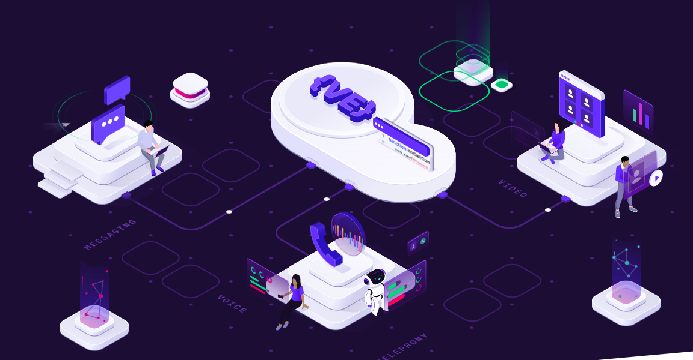

Немного о себе
В 2018 году решил войти в айти и выйграл грант в html academy на профессию frontend разработчик. После прошел собеседование на позицию верстальщика в сайт, который крадет деньги у ваших девушек wildberries Отработав 2 года пригласили в voximplant там я познакомился с версткой на vue и созданием подобных анимаций с помощью webanimation api
После предложили в sber на позицию angular frontend developer
С детства не заладилось с игрой в шахматы, дед был военным интеллектуалом, который обыгрывал весь госпиталь. И мне не давал и шанса поднатореть в этом деле. Решил скачать приложение chess и поиграть с ботами, там есть рейтинг и самый слабый бот с рейтингом 250 давал мне прикурить. Постоянно играя и учась на ошибках, иногда решай задачи и заучивая дебюты, мне удалось занять первое место по количеству выйгранных партий. Можно проверить по ссылке